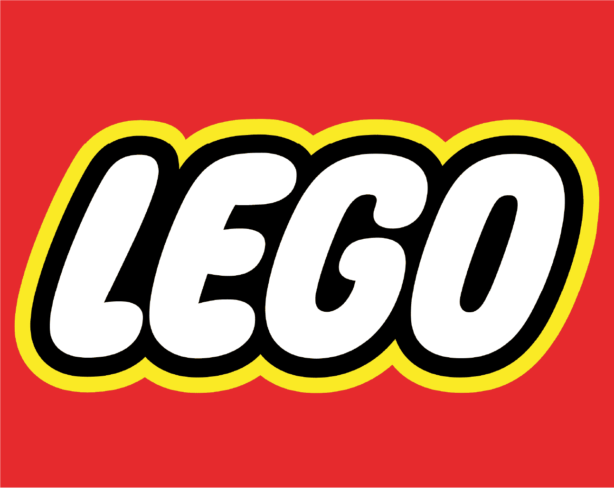

06.
Trabajo individual



Este proyecto corresponde al comienzo final del curso Diseño en Conceptualización I. Consistió en la creación de un modelo 3D de Iron Man en formato LEGO. El desafío fue desarrollar una figura de superhéroe icónico, llevándolo desde la integración de miniaturas de LEGO hasta el logro del ensamblaje. Diseñadas clásicas de construcción digital, precisión de proporciones y limitantes de planos.